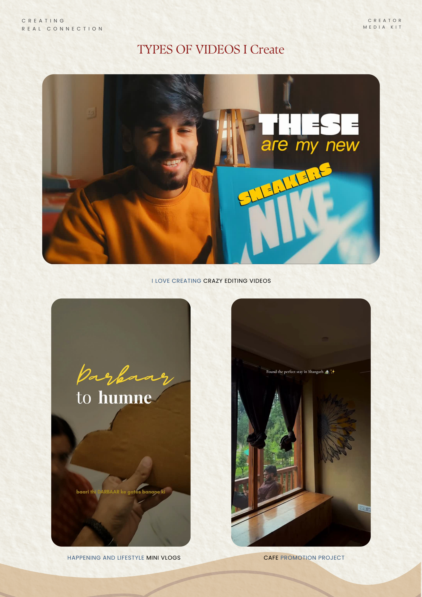
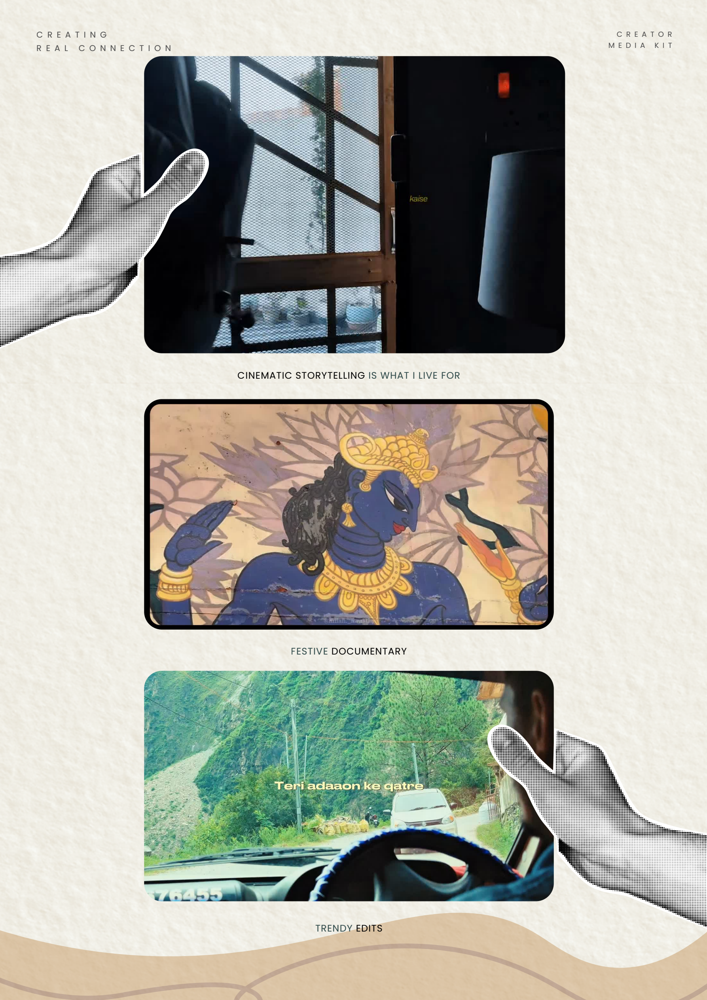
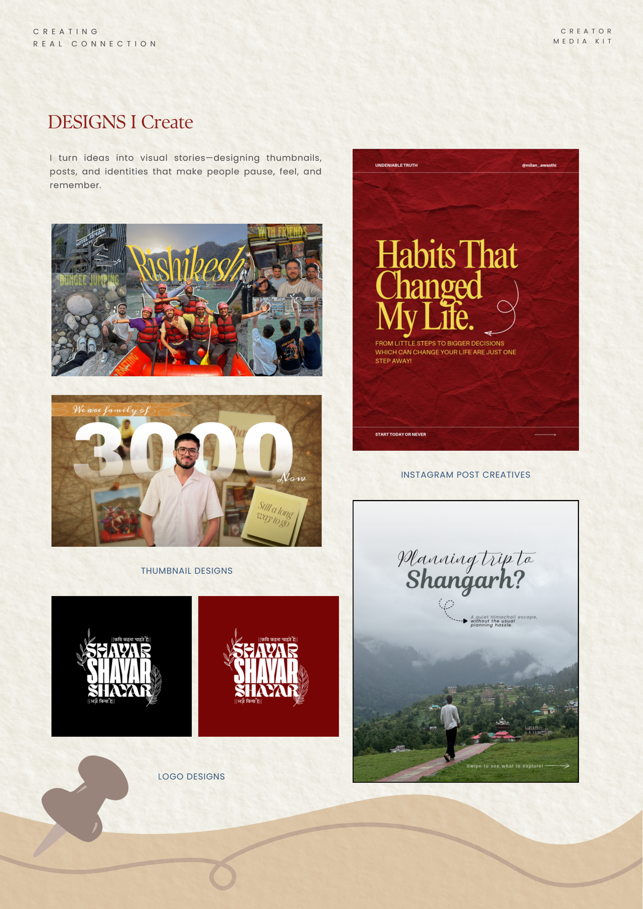
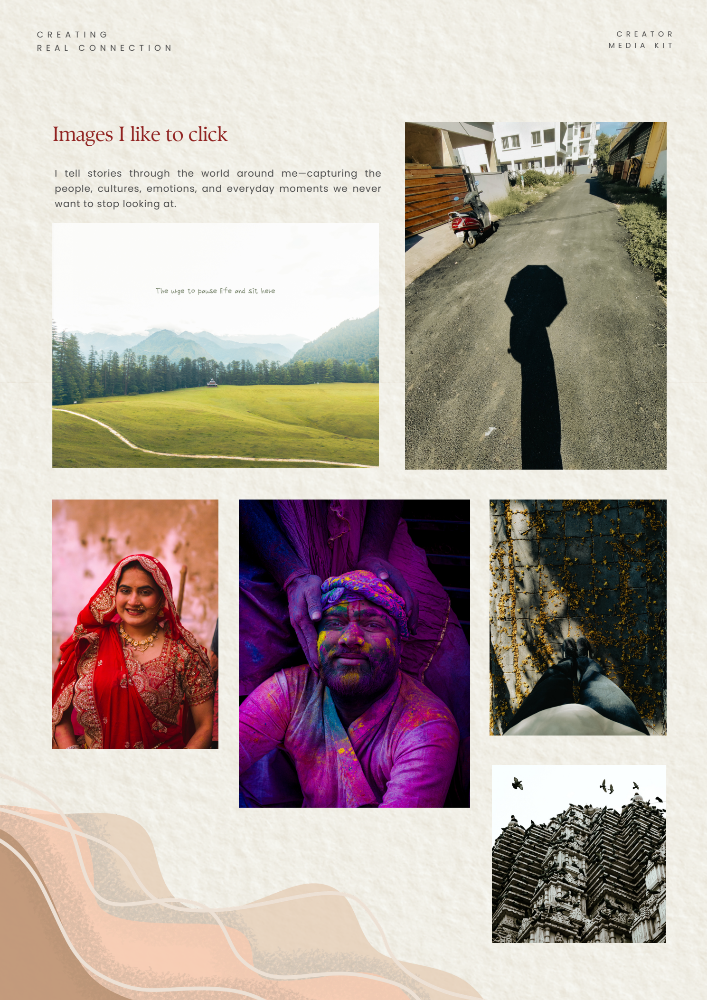

C R E A T I N G
R E A L C O N N E C T I O N
C R E A T O R
M E D I A K I T
MEDIA KIT
Milan Awasthi
I create cinematic video edits and lifestyle stories that feel
personal, not like ads—for tech, lifestyle, fashion and D2C
brands.
Key Stats
1.6K
F O L L O W E R S
77.4K
A V G R E E L V I E W S
Audience
18–36
80%
T R A V E L L E R • V I D E O E D I T O R • S T O R Y T E L L E R
Rate Card
1 REEL
1 REEL + 2 STORIES
STORY SET (3 FRAMES)
UGC VIDEO — BRAND POSTS IT
₹3,500
₹5,000
₹1,000
₹3,000
190.3%
E N G A G E M E N T
350
S T O R Y V I E W S
20%
T O P A G E
G R O U P
W O M E N
M E N
More Ways to Partner
T O P C I T I E S : D E L H I , N O I D A , L U C K N O W
T O P C O U N T R I E S : I N D I A , U A E
C I N E M A T I C
S T O R I E S
W I T H
F E E L I N G
P E R S O N A L
B Y
D E S I G N
L E T ' S C O L L A B O R A T E
1 COLLABORATION REEL
POST
₹4,000
₹3,000
Contact
milanawasthi2003@gmail.com
@milan_.awasthi
Barter Collaboration, if the product is actually
worth it

TYPES OF VIDEOS I Create
I LOVE CREATING CRAZY EDITING VIDEOS
CAFE PROMOTION PROJECT
HAPPENING AND LIFESTYLE MINI VLOGS
C R E A T I N G
R E A L C O N N E C T I O N
C R E A T O R
M E D I A K I T

C R E A T I N G
R E A L C O N N E C T I O N
C R E A T O R
M E D I A K I T
CINEMATIC STORYTELLING IS WHAT I LIVE FOR
FESTIVE DOCUMENTARY
TRENDY EDITS

DESIGNS I Create
I turn ideas into visual stories—designing thumbnails,
posts, and identities that make people pause, feel, and
remember.
THUMBNAIL DESIGNS
INSTAGRAM POST CREATIVES
LOGO DESIGNS
C R E A T I N G
R E A L C O N N E C T I O N
C R E A T O R
M E D I A K I T

Images I like to click
I tell stories through the world around me—capturing the
people, cultures, emotions, and everyday moments we never
want to stop looking at.
C R E A T I N G
R E A L C O N N E C T I O N
C R E A T O R
M E D I A K I T